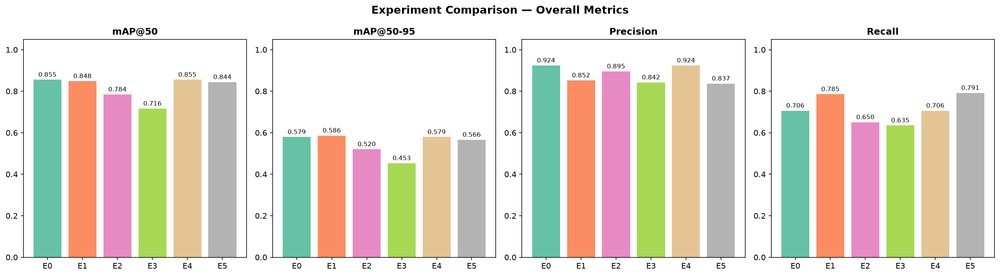
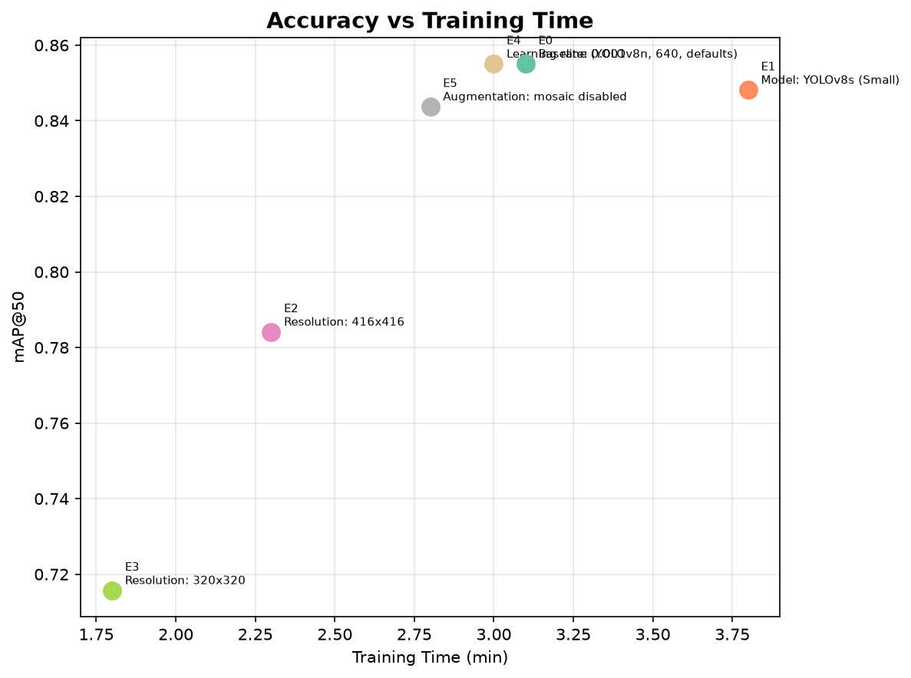
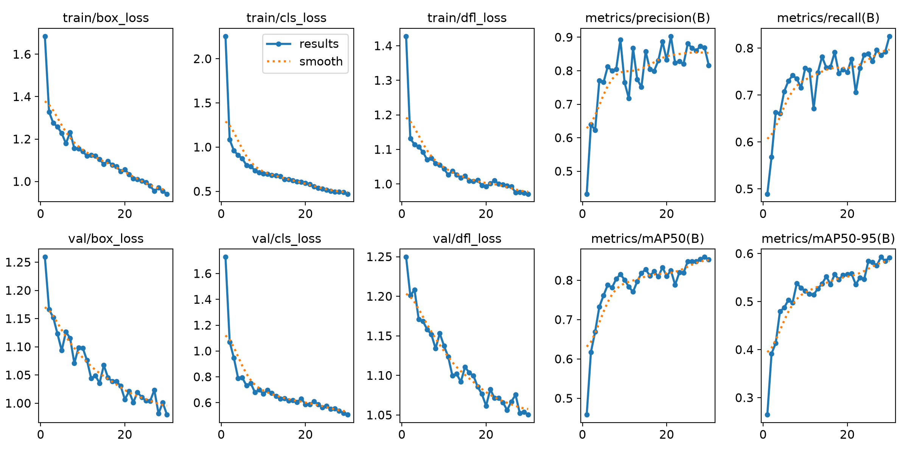
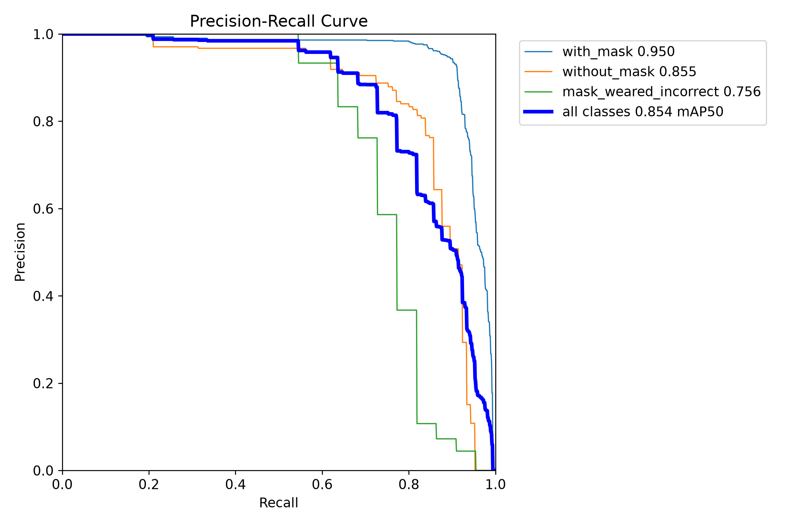
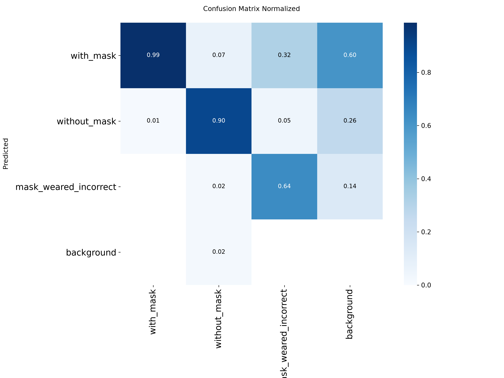

Face Mask Detection
Deteccao de Mascaras Faciais com YOLOv8 e Deep Learning
Seminario — Novembro 2026
1Contexto e Motivacao
Problema
Deteccao automatica do uso de mascaras faciais em imagens, classificando cada rosto detectado em 3 categorias:
- ● Com mascara — uso correto
- ● Sem mascara — nao usa
- ● Mascara incorreta — abaixo do nariz
Motivacao
- Fiscalizacao sanitaria automatizada em locais publicos
- Monitoramento em tempo real (hospitais, aeroportos, transporte)
- Reducao da necessidade de fiscalizacao humana
Tipo de Tarefa
Object Detection (Deteccao de Objetos)
Diferente de classificacao simples: o modelo precisa localizar cada rosto (bounding box) e classificar simultaneamente. Uma imagem pode conter multiplas pessoas com classes diferentes.
Objetivo
Treinar um modelo YOLOv8 com transfer learning para detectar e classificar o uso de mascara em tempo real, avaliando desempenho com metricas de deteccao (mAP, precision, recall).
Face Mask Detection — Kaggle
Formato
- Imagens PNG de resolucao variada
- Anotacoes em Pascal VOC (XML)
- Cada XML contem coordenadas (xmin, ymin, xmax, ymax) e classe
Divisao dos Dados
| Split | Imagens | Proporcao |
|---|---|---|
| Treino | 682 | 80% |
| Validacao | 171 | 20% |
Distribuicao de Classes
⚠ Desbalanceamento: A classe mask_weared_incorrect tem apenas 123 amostras (3%). Isso impacta diretamente o desempenho do modelo nessa classe.
Exemplos do Dataset


Observacoes
- A maioria dos bounding boxes sao pequenos (rostos distantes na cena)
- Largura e altura concentradas entre 10-50 pixels
- Proporcao W/H aproximadamente quadrada (rostos)
- Imagens contem de 1 a 10+ pessoas cada
- Cenas variadas: ruas, interiores, close-ups
Metodologia: Variavel Controlada
Abordagem
Estudo sistematico com 6 experimentos, variando um unico parametro por vez a partir de uma configuracao baseline. Permite isolar o impacto de cada escolha.
Configuracao Baseline
| Parametro | Valor |
|---|---|
| Modelo | YOLOv8n (Nano) |
| Pesos iniciais | COCO pre-trained |
| Image size | 640 x 640 |
| Epochs | 15 (comparacao) / 30 (final) |
| Batch size | 8 |
| Learning rate | 0.01 |
| Mosaic augmentation | Ativo |
| Hardware | RTX 4060 8GB (CUDA) |
Variaveis Testadas
E1 — Tamanho do modelo: YOLOv8s (Small) vs Nano
Modelo maior melhora precisao neste dataset?
E2/E3 — Resolucao: 416x416 e 320x320 vs 640
Qual a resolucao minima aceitavel?
E4 — Learning rate: 0.001 vs 0.01
Taxa menor converge melhor?
E5 — Augmentation: Mosaic desativado
Augmentation ajuda com dataset pequeno?
Metricas de Avaliacao
- mAP@0.5 — Mean Average Precision (IoU >= 50%)
- mAP@0.5:0.95 — Media em multiplos limiares IoU
- Precision / Recall — Qualidade vs cobertura
- Tempo de treino — Custo computacional
YOLOv8 Nano — "You Only Look Once"
Detector de objetos single-stage: localiza e classifica em uma unica passada pela rede.
Conv + C2f + SPPF
FPN + Upsample
Detect x3
| Componente | Funcao |
|---|---|
| Backbone | Extrai features (bordas, texturas, formas) |
| C2f blocks | Cross-stage partial — features multi-escala |
| SPPF | Pooling espacial em diferentes escalas |
| Neck (FPN) | Funde features de alta e baixa resolucao |
| Head | Prediz boxes + classes em 3 escalas |
Especificacoes
Por que YOLOv8 Nano?
Validado experimentalmente: YOLOv8s (Small, 11.2M params) obteve mAP 84.8% vs 85.5% do Nano — modelo maior nao melhorou neste dataset.
- Dataset pequeno (853 imgs) — modelo maior causa overfitting
- Transfer learning — COCO pre-trained compensa o tamanho
- 3x menos parametros — treina mais rapido, mesmo resultado
- Inferencia rapida — viavel para aplicacao em tempo real
Comparacao de Configuracoes
| # | Configuracao | Variavel | mAP@50 | mAP@50-95 | Precision | Recall | Tempo |
|---|---|---|---|---|---|---|---|
| E0 | Baseline (Nano, 640) | — | 85.5% | 57.9% | 92.4% | 70.6% | 3 min |
| E1 | YOLOv8s (Small) | model | 84.8% | 58.6% | 85.2% | 78.5% | 4 min |
| E2 | Resolucao 416 | imgsz | 78.4% | 52.0% | 89.5% | 65.1% | 2 min |
| E3 | Resolucao 320 | imgsz | 71.6% | 45.3% | 84.2% | 63.5% | 2 min |
| E4 | LR = 0.001 | lr0 | 85.5% | 57.9% | 92.4% | 70.6% | 3 min |
| E5 | Sem mosaic | mosaic | 84.4% | 56.6% | 83.7% | 79.1% | 3 min |
Modelo
YOLOv8s nao superou o Nano (84.8 vs 85.5 mAP). Modelo maior e desnecessario para 853 imagens.
Resolucao
Impacto critico: 640→416 perde 7%, 640→320 perde 14% de mAP. Resolucao 640 e essencial.
Augmentation
Mosaic contribui +1.1% mAP. Learning rate 0.001 convergiu ao mesmo ponto que 0.01.
Analise Comparativa

Conclusao do Estudo
A configuracao baseline (YOLOv8n, 640px, lr=0.01, mosaic) ja e otima para este problema. Nenhuma variacao superou significativamente. Decisao: treinar modelo final com esta config + 30 epochs.

Per-Class AP@50
| Exp | with_mask | without_mask | incorrect |
|---|---|---|---|
| E0 | 95.0% | 83.9% | 77.5% |
| E1 | 96.2% | 87.0% | 71.2% |
| E2 | 93.8% | 73.9% | 67.5% |
| E3 | 90.8% | 69.3% | 54.7% |
| E5 | 95.3% | 84.9% | 73.0% |
Curvas de Treinamento — Modelo Final (30 epochs)

Analise da Convergencia
- ● Todas as losses decrescem continuamente ao longo de 30 epochs
- ● Val loss acompanha train loss — sem overfitting
- ● mAP estabiliza nas ultimas epochs — modelo convergiu
- ● Recall subiu +7.5% com mais epochs (70.6% → 78.1%)
Tecnicas Anti-overfitting
Transfer Learning — 349 camadas pre-treinadas (COCO, 330K imgs)
Data Augmentation — Mosaic, flip, scale (+/-50%), HSV, erasing (40%)
Early Stopping — patience=10 epochs sem melhoria
Metricas de Desempenho — Modelo Final
Desempenho por Classe
| Classe | Precision | Recall | AP@0.5 |
|---|---|---|---|
| ● with_mask | 0.911 | 0.913 | 0.950 |
| ● without_mask | 0.868 | 0.754 | 0.850 |
| ● mask_incorrect | 0.832 | 0.677 | 0.751 |
Curva Precision-Recall

Matriz de Confusao

Analise dos Erros
with_mask: alta confianca
Classe dominante (3.232 amostras) — modelo aprende muito bem
without_mask: bom desempenho
AP subiu de 75.1% para 85.0% com resolucao 640 e mais epochs
mask_incorrect: desafio principal
AP 75.1% — confusao com with_mask (visualmente similares)
Principal causa de erro:
Mascara incorreta (abaixo do nariz) e visualmente muito parecida com mascara correta, e a classe tem poucas amostras (123 vs 3.232).
Exemplos de Predicoes

✔ Multiplas masks detectadas

✔ Confianca alta (0.92)

✔ Cena com crowd

✔ 3 classes na mesma cena
✔ Predicoes corretas
- with_mask detectada com alta confianca (0.6-0.9)
- Funciona em diferentes cenarios (rua, interior, close-up)
- Detecta multiplas pessoas na mesma imagem
✘ Erros observados
- mask_incorrect frequentemente classificada como with_mask
- Rostos muito pequenos/distantes podem ser perdidos
- Oclusao parcial reduz confianca da deteccao
Analise Critica e Melhorias
✔ Pontos Fortes
- Metodologia rigorosa — 6 experimentos com variavel controlada
- Cada escolha justificada com dados experimentais
- Alta performance em with_mask (95.0% AP)
- Transfer learning eficaz com apenas 853 imagens
- Pipeline completo e reprodutivel
- Sem overfitting — val loss acompanha train loss
✘ Limitacoes
- Desbalanceamento — mask_incorrect com apenas 3% dos dados
- Confusao visual entre mask_incorrect e with_mask
- Dataset pequeno — 853 imagens
Melhorias Propostas
1. Oversampling — Aumentar amostras de mask_incorrect com augmentation especifico
2. Focal Loss — Peso maior para classes raras durante treinamento
3. Mais dados — Coletar imagens adicionais de mask_incorrect
4. Deteccao em video — Aplicar em stream de camera em tempo real